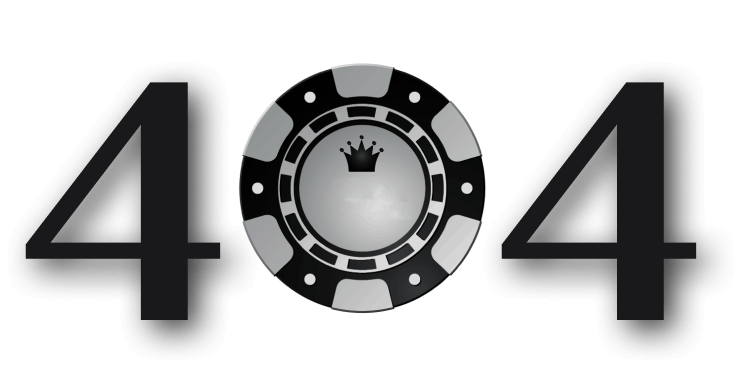

Страница не найдена
Запрашиваемая страница не нашлась.
Возможно, она была удалена или перенесена.
Вернуться на главную
Detected missing Javascript support. Certain website features will not operate correctly with Javascript disabled.